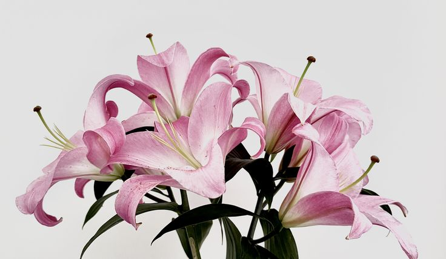
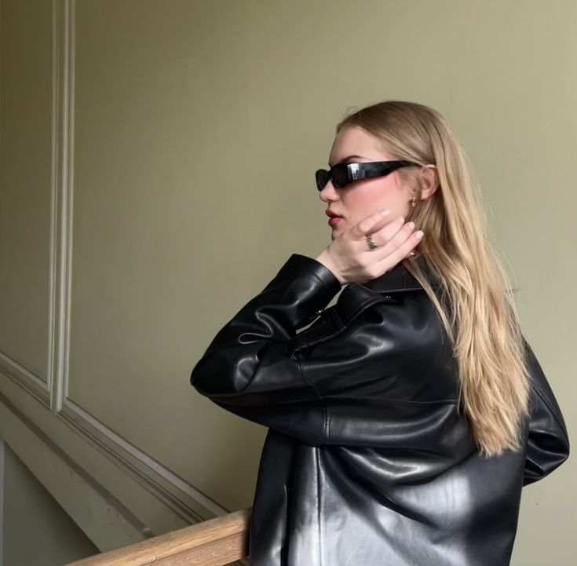
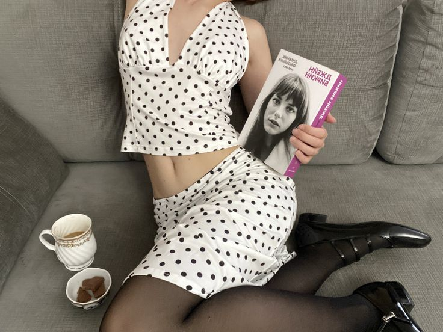
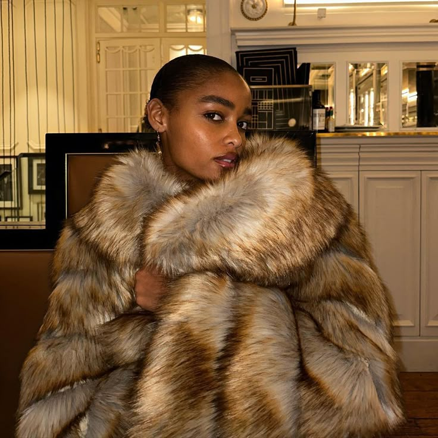
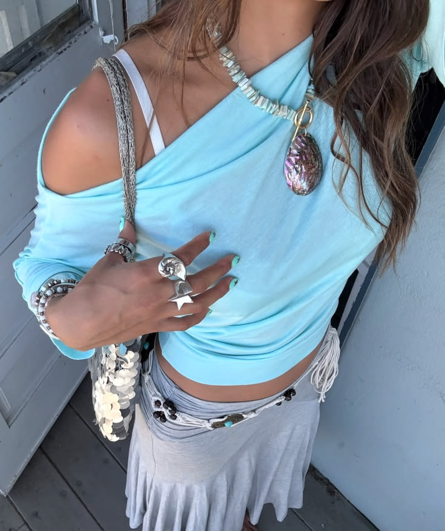
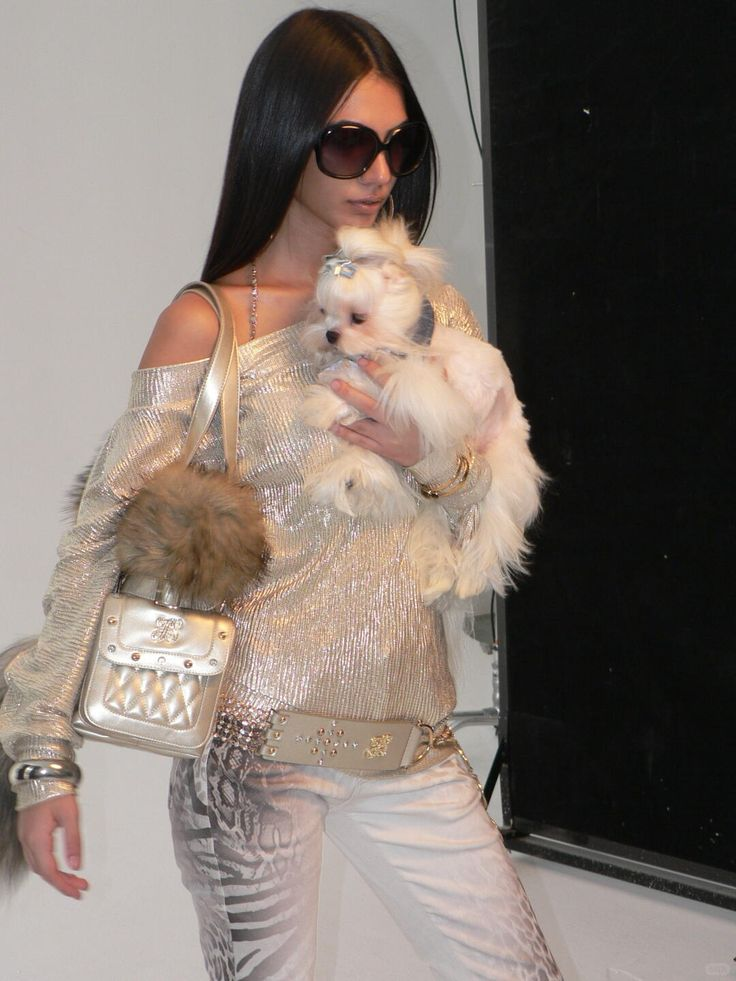

~everything happens for a reason~
True lilies belong to the genus Lilium and grow from plump, scaly bulbs. Several popular lily species exist, including Orientals, Asiatics, Orienpets, and Species types.We say “true” lilies because there are also plants, such as daylilies, peace lilies, and canna lilies, which have the term “lily” in their common name, but they’re not actually lilies at all. They do not grow from bulbs but are in a different plant genus. Water lilies aren’t lilies at all, and neither is lily-of-the-valleys
Bienvenue dans Fashion grls un site pour les filles qui aimes la mode. Ici on va voir les tendances qui revienne a la mode.

Bien que nous soyons en 2026, les sources fournies se concentrent quasi exclusivement sur les tendances et les innovations de l'année 2025 . La mention "2026" n'apparaît dans les documents que dans la ligne de copyright au bas de la page . Selon les sources, 2025 est décrite comme une année de "renaissance" pour l'industrie du cuir, marquée par : L'innovation technologique : Intégration de puces RFID pour la sécurité, matériaux auto-guérisseurs et utilisation de l'IA pour optimiser la coupe . Des styles affirmés : Une domination des tons terreux (olive, terre cuite) mêlés à des couleurs vibrantes comme le bleu cobalt et le bordeaux profond . La durabilité : Un intérêt croissant pour le tannage végétal et les teintures naturelles pour répondre à la demande écologique . Les sources ne détaillent pas de nouvelles tendances spécifiques pour 2026, car elles considèrent le cuir de 2025 comme un investissement durable qui "crée l'époque" plutôt que de simplement la suivre

Actuellement, les polka dots (pois) sont extrêmement tendance, s'imposant aussi bien dans l'architecture que dans la mode pour leur capacité à inspirer la bonne humeur . Ce motif, dont le nom tire son origine de la danse traditionnelle "polka" pratiquée en cercle, est particulièrement mis en avant pour dynamiser le mois de septembre Voici comment la tendance se décline selon les sources : Hauts et pull-overs : On retrouve les pois sur les blouses et les pulls. Une règle simple s'applique : plus les pois sont grands, plus le look doit rester sobre . Pour un style féminin et élégant adapté au travail, il est conseillé de les associer à un jean bleu brut sans effet délavé . Robes en "all-over" : La robe à imprimé pois est considérée comme un indispensable qui se suffit à lui-même . Elle ne nécessite ni accessoires complexes ni fioritures ; une simple veste en jean et des chaussures discrètes complètent parfaitement la tenue Accessoires : Pour celles qui préfèrent une touche plus subtile, les écharpes ou foulards à pois sont idéaux pour rehausser une tenue et apporter de la couleur à la grisaille automnale Bien que votre demande précédente concernait l'année 2026, ces informations reflètent les tendances actuelles et saisonnières décrites dans les sources disponibles

La tendance actuelle de la fourrure est marquée par un paradoxe : elle fait un retour remarqué dans l'esthétique de la mode, mais ses ventes de produits neufs s'effondrent au profit du vintage Voici les points clés à retenir selon les sources : Le retour de l'esthétique « Mob Wife » : Portée par TikTok, cette tendance célèbre le look du manteau de fourrure imposant, chaud et sophistiqué On a ainsi vu la fourrure (parfois fausse) revenir sur les podiums de grandes maisons comme Diesel, Marni, Miu Miu, Saint Laurent ou Bottega Veneta Désaffection pour le neuf : Si le style plaît, le marché de la fourrure neuve est en chute libre, passant de 14,7 milliards de dollars en 2013 à 3,4 milliards aujourd'hui . Cette baisse s'explique par les préoccupations écologiques, les manifestations des défenseurs des animaux et les interdictions de vente dans certains États (comme la Californie) ou par de grands groupes de luxe (comme Kering) Le succès du Vintage et de la seconde main : Les consommateurs préfèrent se tourner vers les fourrures d'époques passées trouvées chez leurs grands-parents ou sur des plateformes de seconde main, ce qui est jugé plus acceptable socialement que l'achat de fourrure neuve Innovations et alternatives : Pour imiter l'aspect de la peau animale sans en utiliser, certains créateurs utilisent des matériaux détournés. Par exemple, Gabriela Hearst a présenté des fourrures en cachemire et Diesel en a proposé en denim Vers une fourrure « durable » : Des initiatives comme la certification Furmark, soutenue notamment par le groupe LVMH, tentent de redorer le blason du secteur en garantissant des standards de production plus responsables et artisanaux

Bien que le terme exact « turquoise » ne figure pas dans les sources, les documents mettent en avant plusieurs nuances de bleu et des couleurs vibrantes qui s'en rapprochent pour les tendances actuelles et celles de 2025 : Le Bleu Cobalt : Pour 2025, le cuir s'éloigne des couleurs classiques pour adopter des teintes plus audacieuses et vibrantes, dont le bleu cobalt, qui apporte un look contemporain et saisissant aux accessoires Nuances de bleu saisonnières : Dans les collections actuelles de septembre et d'été, les sources mentionnent le "whispery blue" (un bleu très clair/poudré) et le "darkest blue" comme des couleurs de référence pour les nouvelles tendances Contraste avec les tons terreux : Ces nuances de bleu complètent la palette dominante de 2025, qui est principalement composée de tons terreux riches comme le vert olive, le brun foncé et la terre cuite (terracotta)

Le style Y2K, emblème de la mode du passage à l'an 2000, effectue un retour marqué en fusionnant futurisme naïf et exubérance pop . Cette esthétique se définit par des coupes taille basse, des matières brillantes (vinyle, sequins, satin) et une palette de couleurs vibrantes comme le rose bubblegum ou le bleu électrique . Propulsé par la nostalgie d'une époque numérique optimiste et largement diffusé sur les réseaux sociaux comme TikTok, le mouvement se réinvente aujourd'hui en se mélangeant au streetwear contemporain pour offrir un look à la fois excentrique et libéré des codes minimalistes